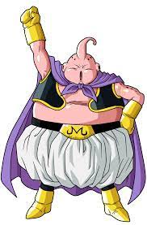
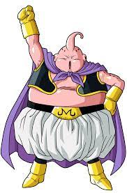

Majin Boo (魔人ブウ Majin Bū?), conocido en el doblaje y ediciones manga de Hispanoamérica como Majin Buu, en el doblaje de España como Bubú o Monstruo Buu y en el doblaje estadounidense como Majin Boo, 1 es un personaje de ficción de la serie de manga y anime Dragon Ball. Su nombre forma un juego de palabras con el de dos magos que saben despertarlo, Bibidi, y su hijo quien lo libera, Babidi; hacen referencia a la película de Disney La Cenicienta y las famosas palabras mágicas del hada madrina, Bibidi Babidi Boo. Es el último gran enemigo al que se enfrentan los héroes en Dragon Ball Z, un demonio rosado con poderes mágicos para convertir a quien quiera en dulce y habilidades como regenerarse casi de forma infinita y absorber personas, tras lo cual cambia de forma y se vuelve más poderoso adquiriendo su energía y habilidades especiales.